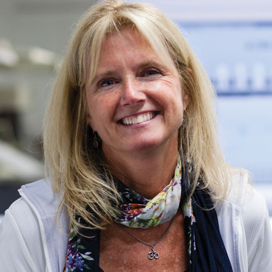
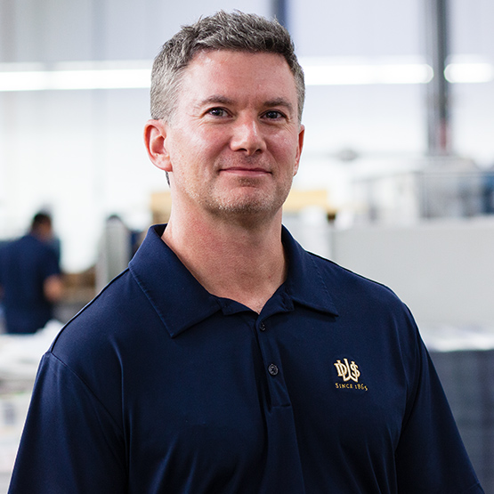
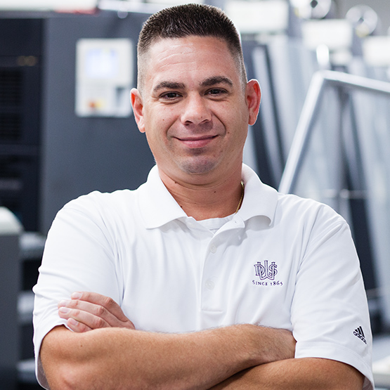
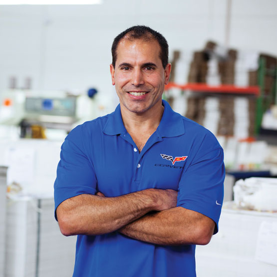
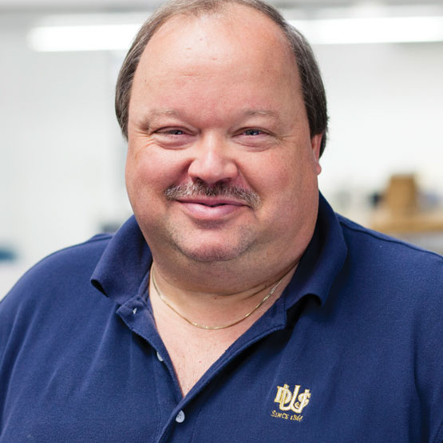
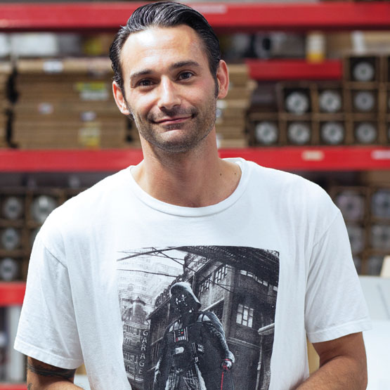
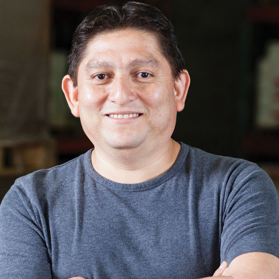
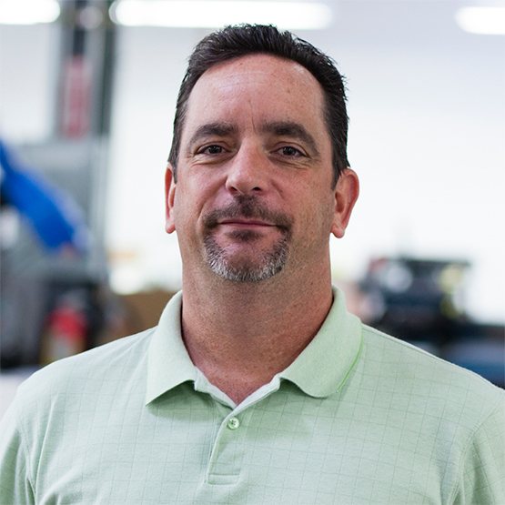
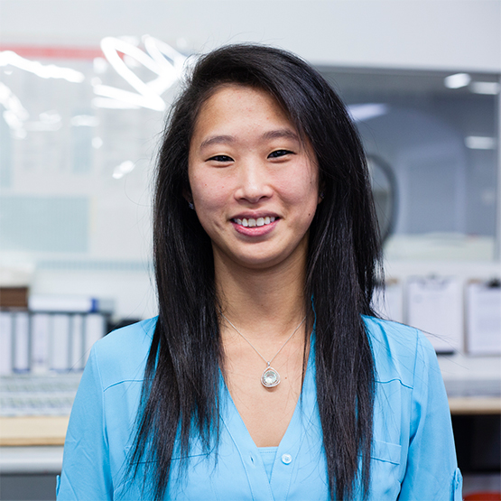

Kathy came to DWS in early 2013 with over 25 years of experience in the print ad sales space, working most recently with Martha Stewart. It took Kathy no time at all to learn labels and packaging and she now covers the entire Southern Atlantic region as well as New England.
Kathy graduated with a B.A. from Fairfield University. She enjoys yoga and spending time with her husband, Tim, their two children and yellow lab, Rocky. Like her brothers, Kathy is also a serious Deadhead and has seen over 200 Grateful Dead concerts.
Kathy Staib
Senior Director of Sales

Craig is DWS' first salesman outside the Staib family to join the company since the 1960's. Craig (aka "Kidd") is a consummate professional and he, Kathy and Andrew work closely together to keep up with our commitment to covering the map with DWS labels.
When he's not selling labels, Kidd is a skilled musician and can be found singing & playing a mean guitar on stage with two of his bands.
Craig Pace
Director of Sales & Marketing

Andrew is DWS' seasoned label sales veteran, with over 25 years experience in the label & packaging space. A team player and a born road warrior, Andrew (aka Elk) is also a history buff and is super proud of his Bostonian roots. We enjoy our Patriots vs Giants banter with the Elk. (Go Big Blue!)
Andrew Elkins
VP of Operations
Dorothy is a vital part of the 3-person DWS Client Service Department and the queen of DWS "local knowledge.” Loved by all, especially her clients, Dorothy is a 23-year veteran with the DWS family.
After hours, you'll likely find Dorothy at a Lynyrd Skynyrd concert or in Las Vegas killing it at video poker and slots.
Dorothy Econs
Client Service Representative

Sal has advanced up the ranks into a leading role in the DWS' Client Service Department. He is a guru in the art of attention to detail, keeping a watchful eye on your label specifications and making sure your labels are processed perfectly and delivered to you when and where you need them.
Like his colleague Dave T, Sal enjoys driving fast cars, really fast cars.
Sal Addotta
Client Service Representative

One of the newer members of the DWS Client Service Team, and an ultra polished professional, Josephine never misses a beat and goes above and beyond to see to it that orders are processed on or ahead of schedule.
A self-proclaimed "bit of a foodie", Josephine enjoys exploring all things food-related and chasing her two young sons with her husband.
Josephine Cantwell
Client Service Representative
John has over 20 years of experience in printing and graphics and oversees DWS' Quality Assurance programs. He is your "Go-To-Guy" with any and all artwork-related questions, file format guidelines, or general tech inquiries.
He loves playing floor hockey and enjoys all kinds of music, especially jam bands and the good 'ol Grateful Dead. He's also an exceptional guitar player.
John Gulino
Senior Technical Director

Dave (aka Dave T) is the man behind the curtain and a magician of sorts who oversees all DWS operations. He the master of "Making Miracles Happen". With over 20 years of experience here at DWS, Dave T is The Man.
He loves cars and has even been known to drive at speeds in excess of 170 mph - on a racetrack, of course.
Dave Tascarella
VP of Operations

Eric joined DWS in January of 2014 and came to us with over 30 years of experience in printing. He oversees all production and spends the better part of his day ensuring that the flow of work running through the plant is being processed smoothly and efficiently.
Eric is also an avid NY Jets fan and loves any and all outdoor activities, especially boating and hiking.
Eric Sorensen
Plant Manager
Craig or “Mr. Smith” as we like to call him, is our Controller/CPA who keeps a watchful eye on the numbers. Mr. Smith may very well hold the title of “Team Member with the Best Sense of Humor,” though he has some competition from the more dry Dave T.
He also enjoys riding motorcycles. Vroom vroom!
Craig Smith
Controller
Courtney works under the guidance of Mr. Smith to ensure that DWS pays its bills on time and gets paid on time too! Ms. Casey is also DWS' internal event planner, initiating all company-wide gatherings and events.
Courtney is an excellent cook and her favorite holiday is Halloween.
Courtney Casey
Assistant Controller

Another one of DWS' behind the curtain guys, Jason (aka "J") is the liaison between our Art Department and our Press Room. He handles all impositions and he generates every press plate, for every job.
In his free time, J can be found playing hockey, watching sports or catching a movie (probably Star Wars).
Jason Attard
Prepress Production

Marie is your key contact as it relates to the shipping and delivery of your orders. We pride ourselves on making really fabulous labels, but when we're done making all those labels, Marie sees to it that they get where they're supposed to be, on time, every time.
You would never know it, but Marie is a proud grandparent and loves spending time with her 4 grandchildren.
Marie Guntis
Shipping Manager

Working in tandem with Marie, we can always rely on Luis to tackle any project in the Production and Shipping Departments. The loading bay is his domain and he makes a point to keep it running like clockwork.
He's also an amazing soccer player.
Luis Estrada
Shipping & Receiving

A 30-year veteran in printing and graphics, Rick one of the newest members of the DWS Team. His responsibilities include pre-flighting all incoming files, color retouching, and processing every label that goes through the DWS Art Department.
Rick enjoys running, playing football and bowling.
Rick Hughes
Pre-Press Production

Our “Director of First Impressions,” Kim is much more than just a friendly face. She plays a critical role in supporting the Sales Team with their sales & marketing initiatives, and works in tandem with our Assistant Controller.
Kim is an avid photographer, and designs jewelry in her free time.
Kim Cipoletti
Administrative Assistant